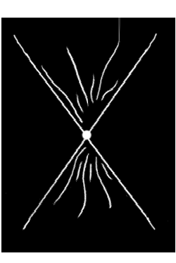

April 27, 1999
You ascertained, beloved, that the real conflict is something that happens esoterically in man and does not involve others in essence. When man finds himself in an inner imbalance, then he directs the waves of his disturbed energy to the outside, resulting in its appearing in his immediate environment as tense relationships with the others. That is why the man who experiences real tranquility does not face disturbances in his relationships either, even if he associates with persons that provoke him. This man can accept his fellow human beings exactly as they are, and may also talk with them, since, being in a higher vibration than them, can hyper-cover them. This also happens when a Master wishes to talk to a person: then, the phenomenon of hyper-coverage allows him to come directly in contact with him through his language, just as in every wider total its sub-totals are contained. In that way the Master "identifying" himself with the person, talks to him as if it were the person's own voice.
You are walking the way of self-fulfillment. What man encounters in his life isn't only what he "deserves", but also some things he needs to encounter for other reasons, just as for instance, in order to know them when it's necessary, some time afterwards, to pass on to other people; or because his karma connects with the karma of people who are on another course and this has an indirect influence on his own life; or, even because he has chosen it himself indirectly, when he chose other elements – for example, someone who has chosen to be born a pioneer of an Art and inevitably faces the rejection of his contemporaries as well. Therefore, the situations you are facing don't constitute an efficient criterion for you to evaluate your self. Disconnect from self-rejection and guilt and do not identify with the now, which simply constitutes a link in an enormous chain. Only then should you control your steps, when you feel that your development has stopped. Then it means that you have to allow your heart to speak to you about the course of Life. While you are walking on it you should not be concerned about anything but that, and not with untimely and superficial evaluations. He, who is walking up the mountain, cannot view it from above.
You know enough about Man and God by now. Man is that link which connects the world of the intangible with the world of matter. He is that One from which the two worlds start and expand towards infinity, and therein he is the image of God, since he himself (man) too, like Him (God) is the One, the beginning, the hyper-dense moment of potentiality. That's why man is perfect, since he has the same identity as God, and this life gives him the opportunity to manifest into matter and then transmute matter into immaterial energy, namely to co-unite the two worlds, as a bridge where the elements of these worlds consciously co-function.
Seek your happiness in counterbalance. Love the world you created within yourself, as God loved the world He created within Him. When you manage to free yourself from the dependence of the need of God, then you will have found Him once and for all.
The Son